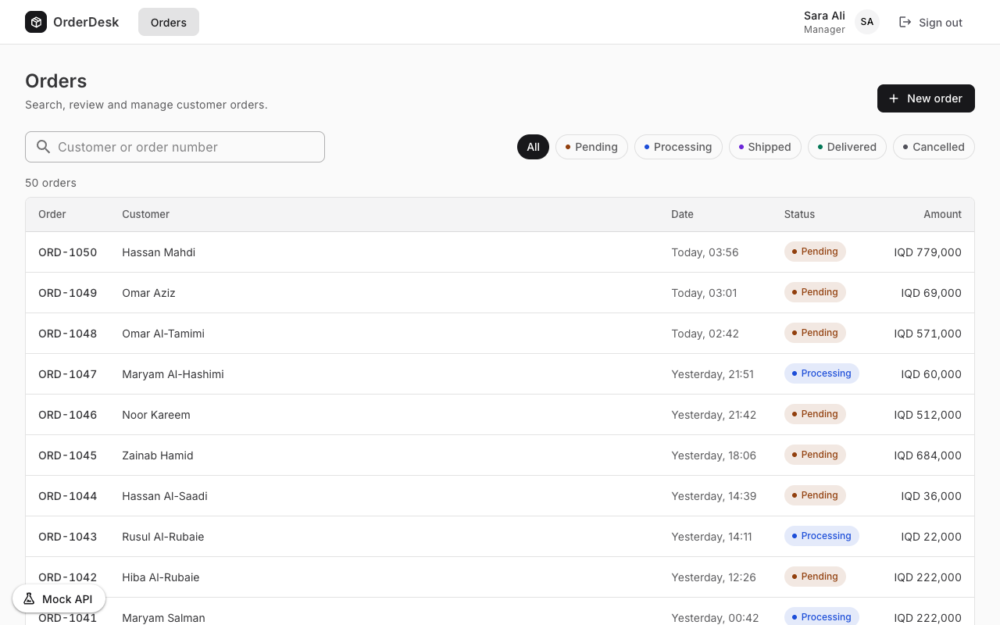
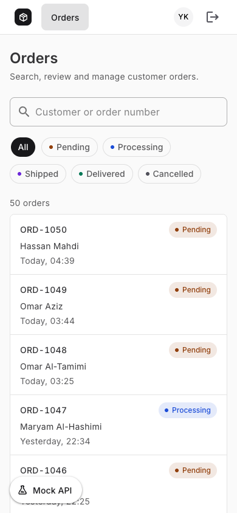
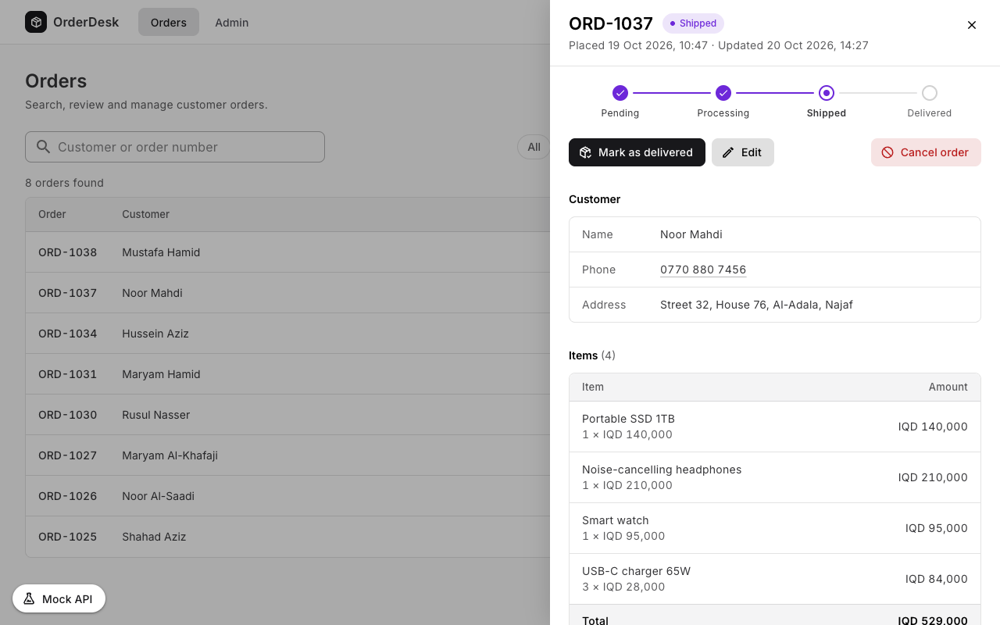

Senior frontend take-home · Project report
An order-management screen in Vue 3, the Composition API and TypeScript, running against a mock API built with axios-mock-adapter. This report shows what was built and the test results behind each requirement in the brief.


| Check | Command | Result |
|---|---|---|
| Tests | npm test |
73 passed · 0 failed |
| Lint | oxlint + eslint |
0 problems |
| Formatting | prettier --check |
clean |
| Type-check and build | npm run build |
passed |
ApiError.
session.can('orders.cancel'). Roles exist only on the server.
/me re-read, 409 for final orders, 422 per
field.
orders.view_amount, since orders carry prices.
| Permission | Admin | Manager | Support |
|---|---|---|---|
orders.view |
|||
orders.view_amount |
|||
orders.create |
|||
orders.update |
|||
orders.update_status |
|||
orders.cancel |
|||
admin.access |

Each requirement from the brief, with the passing tests that prove it. Every test cited here was matched against the Vitest results of the run on the last page.
| Requirement | Evidence |
|---|---|
| Login | |
| Login page with email and password |
|
| Three test users: Admin, Manager, Support |
|
| Role and permissions loaded from GET /me |
|
| Refreshing keeps the user logged in |
|
| Logged-out users go to login; a 401 logs out |
|
| Switching users leaves nothing behind |
|
| Roles and permissions | |
| Admin page can’t be reached by URL without permission |
|
| Mock returns 403 for forbidden actions |
|
| Amounts are never sent to Support |
|
| UI handles a 403, not just hidden buttons |
|
| Delivered and cancelled orders are final, even for Admin |
|
| Hidden vs disabled, explained |
Missing permission → hidden. Blocked by order state → disabled with the reason. See README.
|
| Easy to add roles and permissions |
The UI checks permissions, never roles. A new role is a server-only change. |
| Mock API | |
| About 50 generated orders |
50 deterministic orders from a fixed seed, kept in localStorage. |
| POST /auth/login, 401 on wrong credentials |
|
| GET /orders?q=&status= filtered by the mock |
|
| GET /orders/:id with line items |
|
| POST / PUT orders, 422 per invalid field |
|
| PATCH status and POST cancel, rules on every write |
|
| User from the Authorization token; 401 if missing or invalid |
|
| Random 300–1000 ms delay |
On every response, errors included. Tests run at 0 ms so they stay fast and deterministic. |
| Easy way to force errors |
“Mock API” panel: 500, network, 401, 403 or 422 on the next order request, also with an order's panel open.
|
| Screen | |
| Number, customer, amount, date, status |
|
| Search and status filter; fast typing is safe |
|
| Details in a side panel |
|
| Status change and cancel, by permission |
|
| Loading, no results and errors with retry |
First loads show skeletons; new filters keep the old results and say what's coming.
|
| Mobile and full keyboard use |
Also checked in real Chrome at 1280 px, 900 px and 375 px.
|
| Create and edit | |
| One form for create and edit, with line items and a live total |
|
| Client validation, and 422 errors under the fields |
|
| List and details show the saved data |
|
The UI tests render the whole app against the mock API and act like a user, using Vitest and Testing Library; the contract tests call the mock API directly. The brief asks for at least two tests, one of them about permissions.
| Suite | Covers | Tests | Passed | Time |
|---|---|---|---|---|
mock-api.test.ts |
The API contract: 401, 403, 409, 422, amounts | 16 | 16 | 0.1 s |
auth.test.ts |
Sign-in, sessions, sign-out, stale responses | 12 | 12 | 2.7 s |
permissions.test.ts |
What each role sees and can do | 17 | 17 | 2.5 s |
orders.test.ts |
List, search, loading, details panel, create and edit | 28 | 28 | 10.8 s |
| Total | 73 | 73 | 12.4 s |
npm install
npm test
npm run lint
npm run build
Measured on 21 October 2026 at commit f6dc36d · Node v24.13.0 · Vitest 4.1.11 · 19 test groups across 4 files.